From my desk
Not renders. The real thing, so far.
3D-printed shell, the first prototype board, and a lot of tape. It boots, both screens work, and it closes.
Real
 Real
Real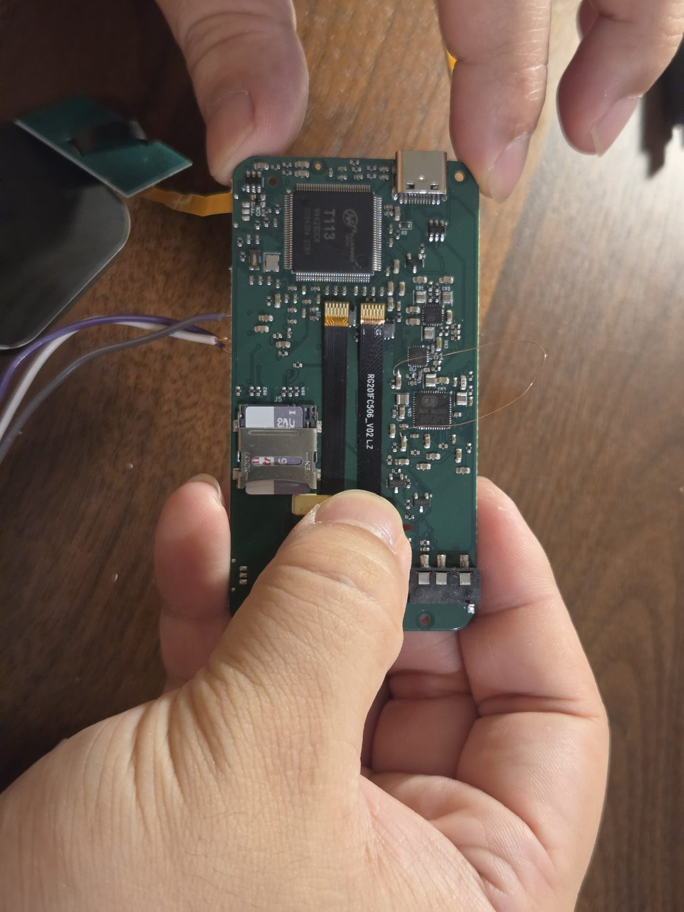
RealSwipe for more
lilvo DS Micro is a clamshell with two screens, real buttons and a real hinge, 85 × 46 × 18 mm closed. It runs DS and 11 classic consoles on its own little OS. I post every step here, the mistakes included.
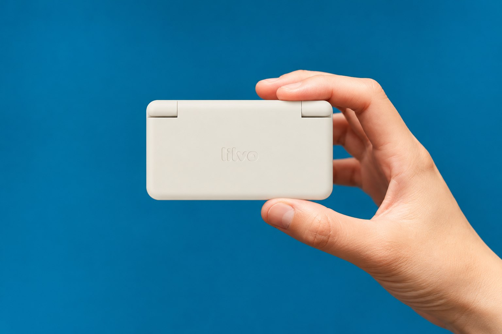
Concept image · closed3D-printed shell, the first prototype board, and a lot of tape. It boots, both screens work, and it closes.
Real
RealSwipe for more
Filmed on my prototype with a phone; the clips are only trimmed. DS games run through DraStic on both screens; GBA, Game Boy, PlayStation and the other single-screen systems run on open-source cores, with a quick panel on the bottom screen for saving, loading and fast-forward.
 Real · DS
Real · DSSwipe for more
No games come with the device. Game names and artwork shown belong to their owners.
I've always loved the FunKey S, a keychain-sized open-source clamshell. DS Micro started as a simple question: what if it were a bit wider, with a screen on each half? It borrows FunKey S ideas wherever it can; the boards, enclosure and software are new.
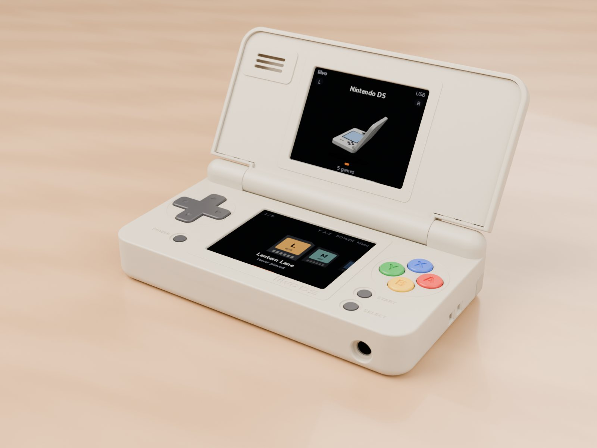
Render · open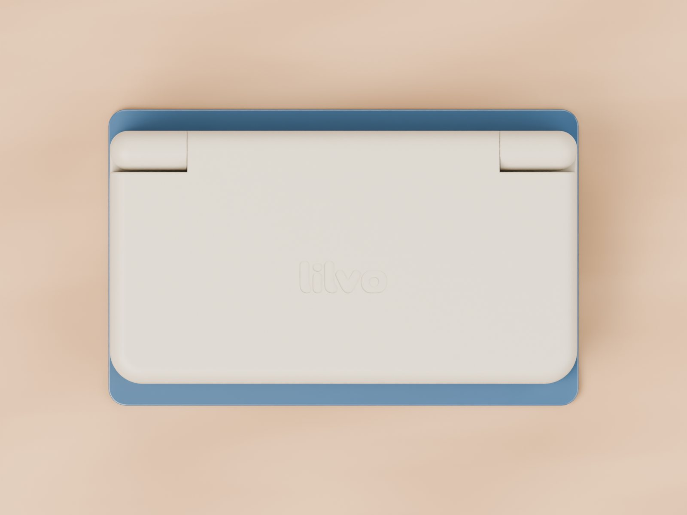
Render · on a bank card, to scale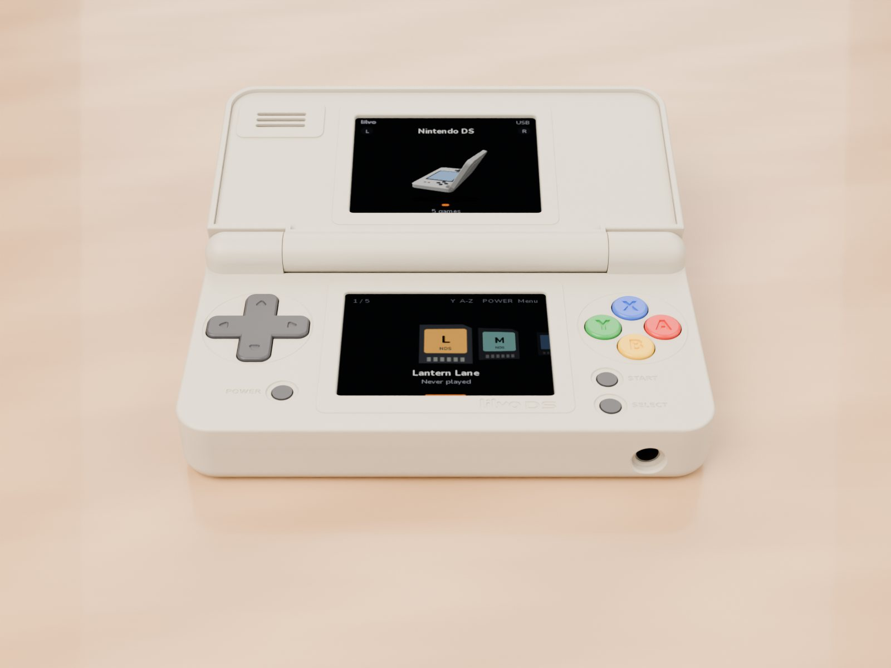
Render · open 170°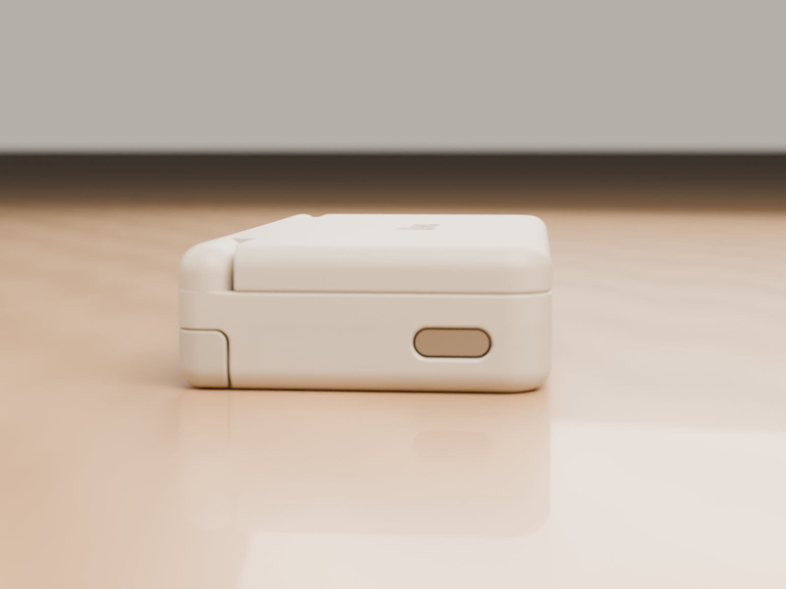
Render · sideSwipe for more
A Hall sensor tells the system the lid is shut. It saves your game first, then powers off. Open it and you're back where you were.
USB-C on the left, a 3.5 mm headphone jack on the right, and the microSD card is hidden inside so it can't pop out.
Snap-fit shell, four screws, a steel hinge pin. The design files will be published so anyone can fix or rebuild one.
I wrote the launcher from scratch on mainline Linux. Below is the real home screen, recorded straight from the system's own renderer. Each console gets a small spinning 3D model on top and your games as cartridges below.
L / R switch consoles, left / right pick a game. Every console remembers where you were.
Hold the screen edge or press Y for a curved alphabet that swells under your finger.
Like FunKey S, POWER opens every menu: save states, volume, brightness, swap screens.
Plug in USB-C and open lilvo.local to add games, covers and saves. More below.
System updates install from that page too. The manual lives there as well; there's no paper.
Auto-save on quit, on lid close and on low battery, written so a sudden power cut can't corrupt them.
Jump to a letter in two moves.

Four save slots per game, with screenshots.

Every option explains itself on the top screen.
Swipe for more
DS uses DraStic; the others use open-source libretro cores. 2D DS games are the target for full speed. Most cores haven't been tested on the real hardware yet. Bring your own games.
No SD card shuffling and no special app. Plug the console into your computer with USB-C, open lilvo.local, and the console serves its own management page.
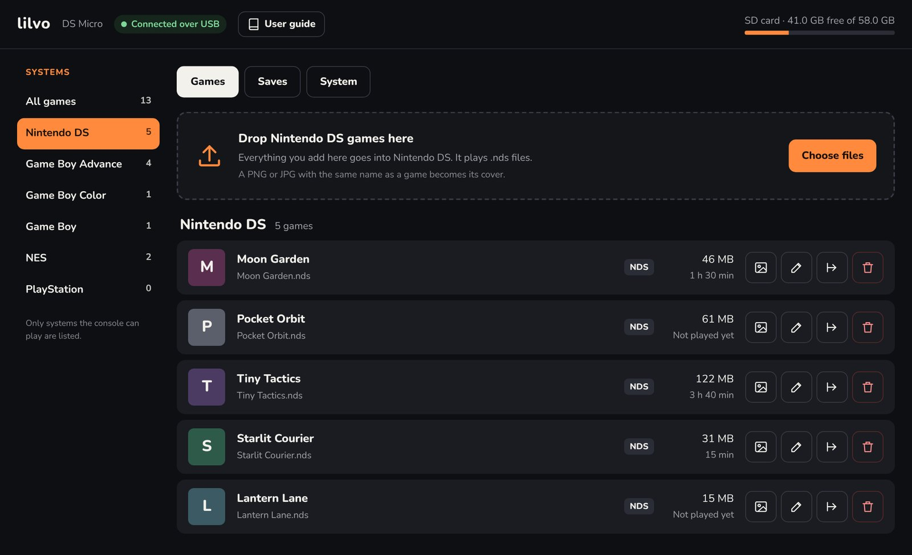
Real page · placeholder gamesPick a console, drag files in. Files it can't play are kept but marked red, with the reason.
Drop a PNG or JPG with the same name as the game. DS games use their own icon until then.
Rename a game and its cover, save file and every save-state slot move with it.
Download all saves as one zip, restore them, or roll one game's save back.
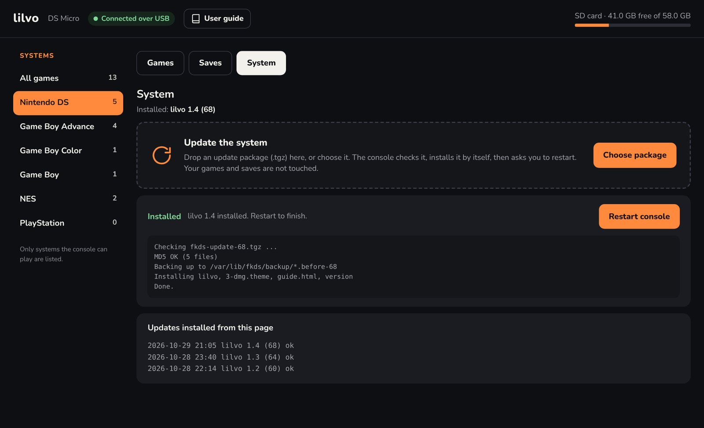
System updateDrop an update package on the System tab. The console checks it, backs up what it replaces, installs it and asks you to restart. Games and saves aren't touched. Since lilvo 1.1, this is the only way I update my own prototype.
The user guide is a page on the console itself, always matching the installed version. How and why I built it →
Works on a Mac today. Windows support needs a different USB network mode and is on the list.
A theme changes more than colours: each can have its own home layout, its own way of drawing consoles and cartridges, and a screen filter. lilvo is the default. NEON is the one I've had the most fun with.
NEON swaps the shelf for a wheel. Games scroll by name on the right, the selected one floats as a glowing glass cartridge on the left, and every console turns into a hologram.
The same theme running on my taped-together prototype, filmed with my phone: switching consoles, scrolling the game wheel, the holographic models spinning.
Game names and covers in this clip come from my own test library.
Shell colours I rendered to go with the NEON theme: translucent pink and purple, and a mint version. Whether shells like these can actually be made, and at what cost, is completely unknown for now.
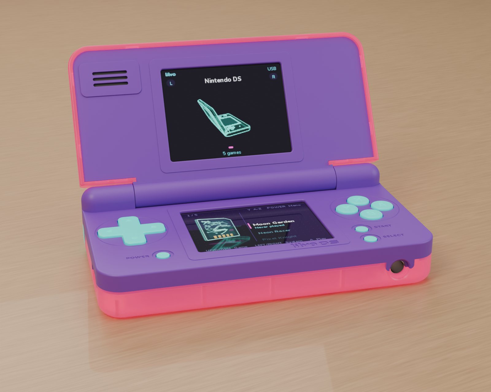
Render · concept colour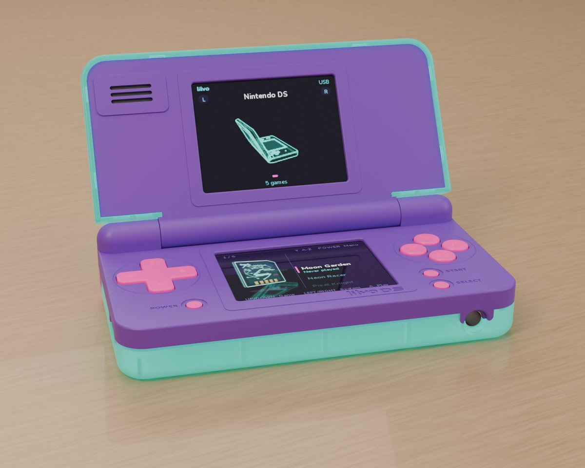
Render · concept colour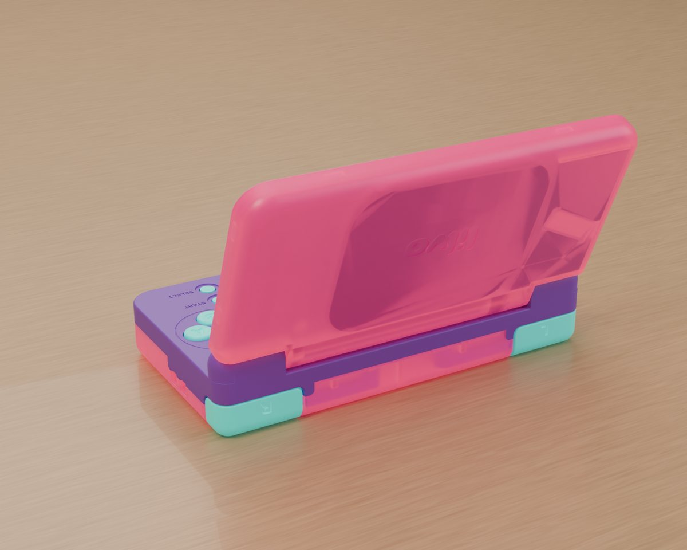
Render · concept colour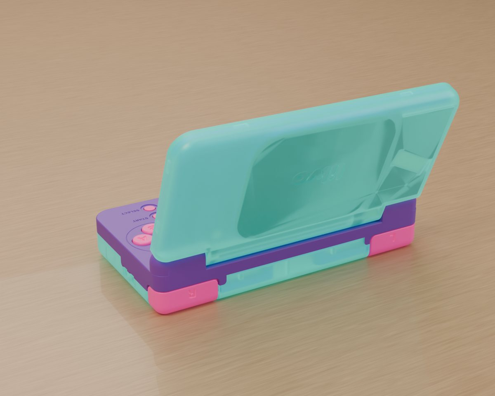
Render · concept colourSwipe for more
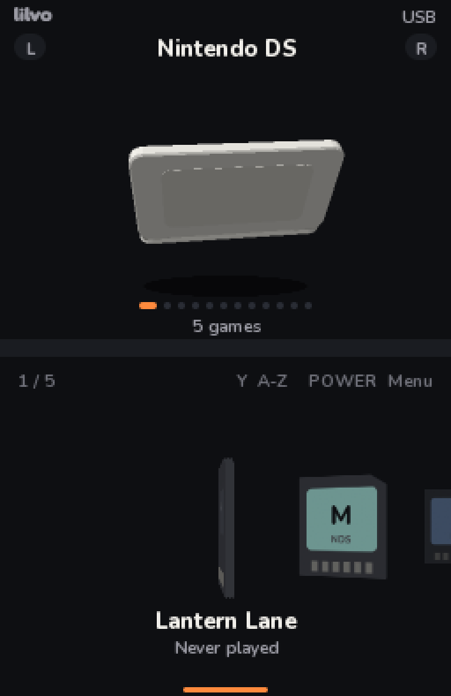
The default. Warm orange on charcoal, Shelf layout.
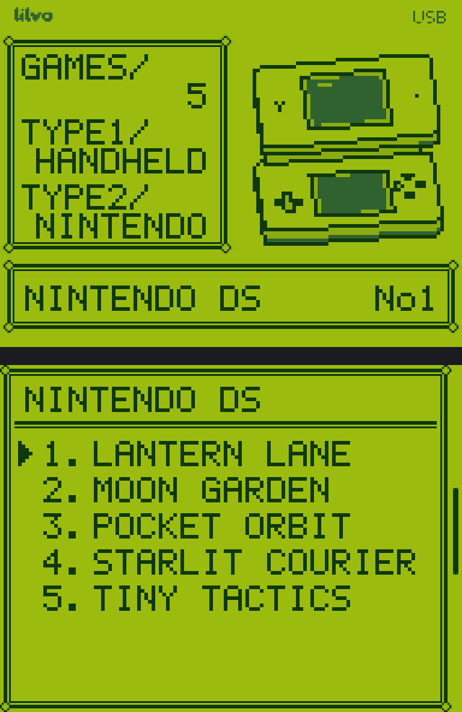
Four shades of green, hand-drawn pixel consoles, a handheld-RPG style menu.
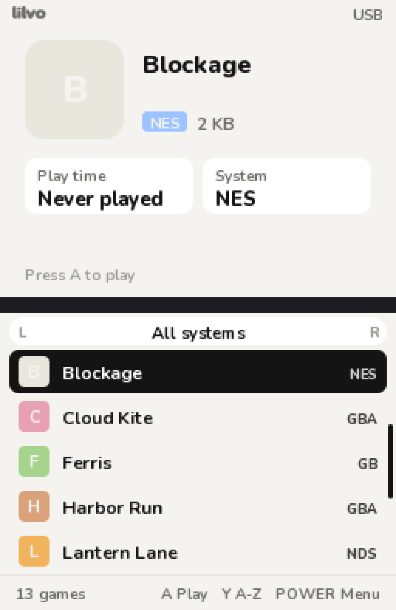
Black on white, a plain list. For people who just want their games.
Swipe for more
Each update is a short post with photos. Here are the three newest; the full timeline is on its own page.
Swipe for more
See the full timeline →Anything here can still change.
| Size | 85 × 46 × 18 mm closed |
| Processor | Allwinner T113, dual-core Cortex-A7 @ 1.2 GHz |
| Screens | 2 × IPS, 256 × 192 shown on each |
| Touch | Bottom screen, capacitiveUNDECIDED |
| Controls | D-pad, A B X Y, L / R, Start, Select, Power |
| Battery | 1200 mAh Li-Po |
| Storage | microSD, inside the shell |
| Audio | Speaker + 3.5 mm headphone jack |
| Ports | USB-C (charging, files, updates). No Wi-Fi. |
| Software | lilvo system on mainline Linux |
Not yet. The goal is to take it all the way to mass production, and I'm doing everything I can to get there. The Beta boards are the next big step. When there's news about availability, it'll be here and on Reddit first.
I don't know yet, and I'd rather not guess.
2D games are the target and run at full speed in my testing. Heavy 3D games run, but skip frames. Size and battery life come before raw power.
The current prototype has touch on the bottom screen. I'm also exploring an even smaller version without it. If you have an opinion, tell me on Reddit.
The best emulators for those have non-commercial licences, so I've left them out for now.
Yes. Hardware under CERN-OHL-S-2.0, and the system with its source. FunKey S is credited, and its non-commercial terms are kept where its parts are reused.
An email when there's real progress: new boards, new photos, the open-source release. Nothing else.